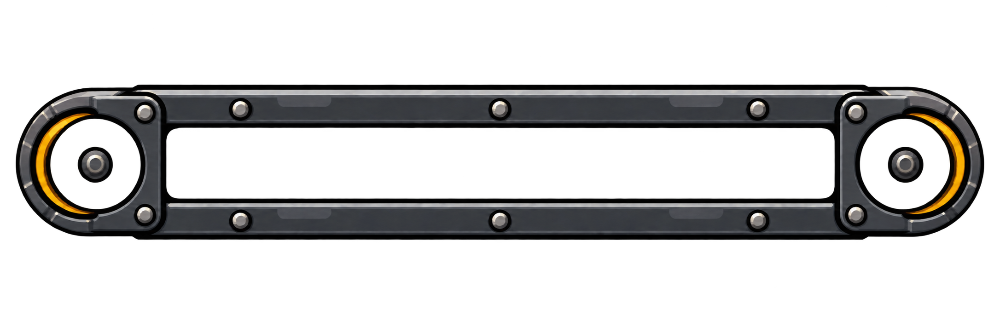
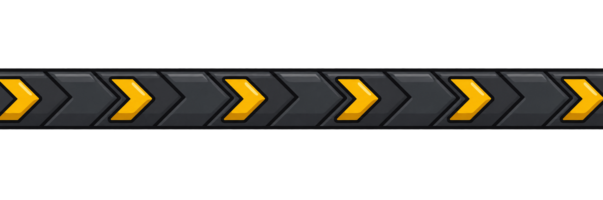
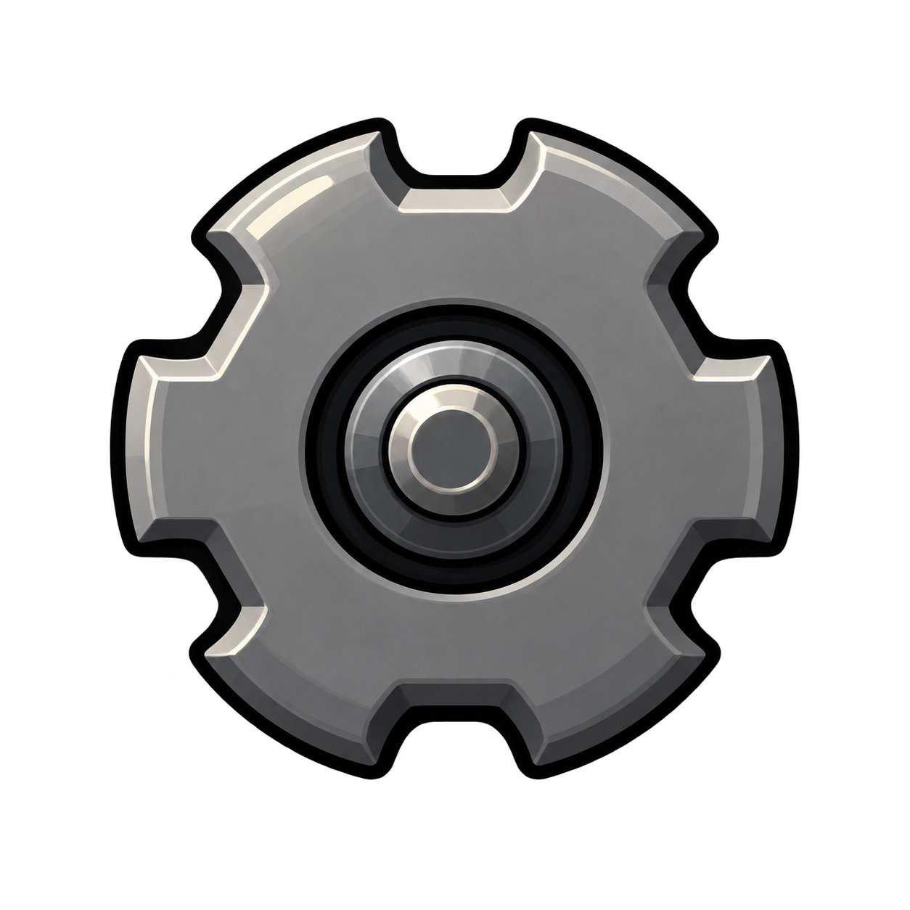
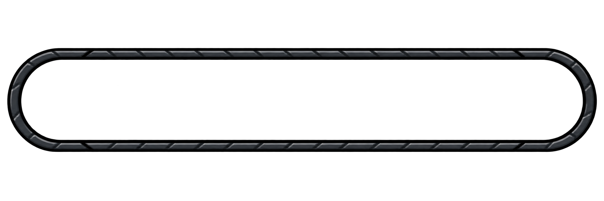

1. Châssis fixe

Vis, plaques et caches d’axes fixes.
Les flèches défilent, les deux roues tournent et le châssis reste fixe. Le contour est libre sur les quatre côtés.

Vis, plaques et caches d’axes fixes.

Motif existant, défilement continu.

Un calque réutilisé aux deux extrémités.

Contour séparé ; repères mobiles optionnels.